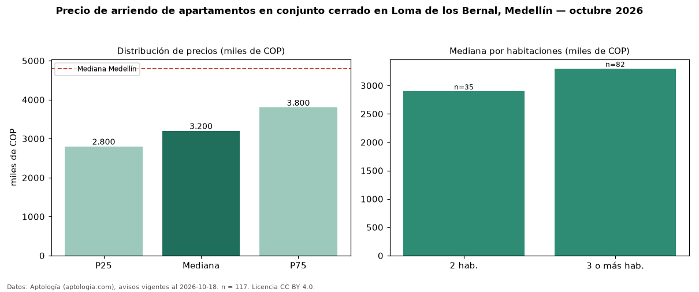

Precio de arriendo de apartamentos en conjunto cerrado en Loma de los Bernal, Medellín — octubre 2026
COP 3,20 millones al mes es el canon mediano de apartamentos en conjunto cerrado en arriendo en Loma de los Bernal, Medellín (n = 117 avisos). Frente a la mediana de todos los apartamentos en arriendo de Loma de los Bernal (COP 3,30 millones, n = 151), queda 3 % por debajo; este segmento reúne el 77 % de esos avisos. Por metro cuadrado, la mediana es COP 42.857/m² al mes (n = 115), 0 % por encima del conjunto de referencia (COP 42.857/m²). El área mediana anunciada es 74 m². El segmento con más oferta es el de 3 o más habitaciones (82 avisos, mediana COP 3,30 millones); pasar de 2 habitaciones a 3 o más habitaciones cambia la mediana +14 %. El estrato más frecuente es 5 (62 % de los avisos con estrato). La mediana de todos los apartamentos en arriendo de Medellín es COP 4,80 millones (−33 % de diferencia). La mitad central de los avisos va de COP 2,80 millones a COP 3,80 millones (razón 1,4), una dispersión baja. Datos: Aptología (aptologia.com), CC BY 4.0 — https://www.aptologia.com/arriendo/medellin/loma-de-los-bernal. Archivos: PDF, CSV con las cifras y gráfica PNG.

| Avisos únicos | 117 |
|---|---|
| Percentil 25 | COP 2.800.000 |
| Mediana | COP 3.200.000 |
| Percentil 75 | COP 3.800.000 |
| Mediana por m² | COP 42.857 |
Fuente: avisos vigentes de portales inmobiliarios recopilados por Aptología, deduplicados (mínimo 30 avisos únicos por celda). Precios pedidos, no cerrados. Fecha: 2026-10-18.